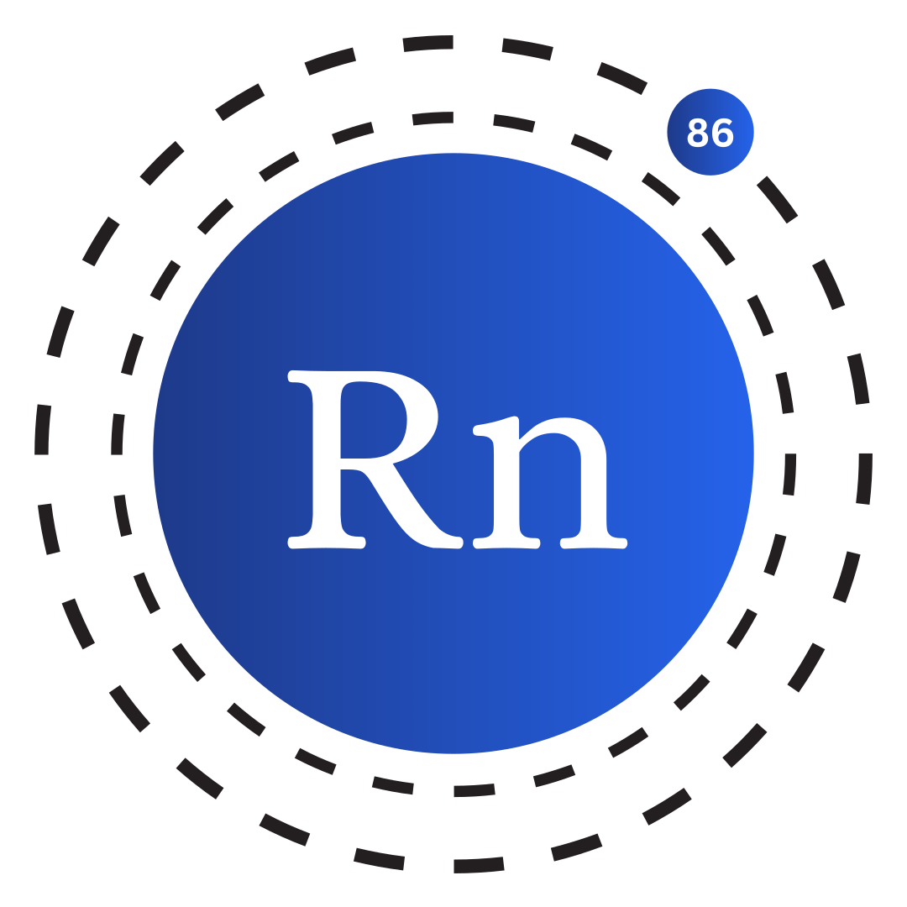

REPL & scripting
Run code your way
Launch an interactive REPL with python radon.py or run any .rn file directly. No build step, no config.

RadonSource-first • Python-powered
Write clean, expressive code with built-in REPL, script runner, standard library modules, classes, error handling, and safe Python interop — all from source.
python radon.pypython radon.py program.rnQuick start
Clone the repository and run directly from source. No build step required — just Python 3.12+ and you're ready to go.
git clone https://github.com/radon-project/radon.git
cd radon
python radon.py # Start REPL
python radon.py examples/simple.rn # Run a fileLanguage tour
Familiar constructs, clean design. See how Radon handles classes, loops, error handling, and more.
import io
class Animal {
fun __constructor__(name, sound) {
this.name = name
this.sound = sound
}
fun speak() {
print(this.name + " says " + this.sound)
}
# Operator overloading
fun __add__(other) {
return Animal(this.name + "&" + other.name, "...")
}
}
var dog = Animal("Dog", "Woof")
var cat = Animal("Cat", "Meow")
dog.speak()
cat.speak()
var both = dog + cat
both.speak() # Dog&Cat says ...# Counting with a for loop
for i = 0 to 5 {
print(i)
}
# While loop with a condition
var count = 0
while count < 3 {
print("tick: " + str(count))
count = count + 1
}
# Loop with step
for i = 0 to 10 step 2 {
print(i) # 0, 2, 4, 6, 8
}fun divide(a, b) {
if b == 0 {
raise Exception("Division by zero")
}
return a / b
}
# Wrap risky calls in try/catch
try {
print(divide(10, 2)) # 5
print(divide(5, 0)) # raises
} catch err {
print("Caught: " + str(err))
}# Arrays
var nums = [1, 2, 3, 4, 5]
append(nums, 6)
print(nums) # [1, 2, 3, 4, 5, 6]
print(nums[0]) # 1
# Slicing
print(nums[1:4]) # [2, 3, 4]
# Hash maps
var config = {
"host": "localhost",
"port": 8080
}
print(config["host"]) # localhost# Import and use any Python module
var os_mod = pyapi("import os; os")
var cwd = pyapi("os.getcwd()")
print(cwd)
# Python's math library
var math = pyapi("import math; math")
print(pyapi("math.sqrt(144)")) # 12.0
# Date and time
var dt = pyapi("import datetime; datetime")
print(pyapi("str(datetime.date.today())"))REPL & scripting
Launch an interactive REPL with python radon.py or run any .rn file directly. No build step, no config.
OOP
Define classes with __constructor__, instance methods, and this — operator overloading supported out of the box.
Error handling
Structured exception handling with try/catch/raise lets you write robust programs without crashing the runtime.
Built-ins
Over 30 built-in helpers — str_len, is_num, append, range, type and more — available with no imports.
Modules
Use import module or from module import name. Standard library modules are plain .rn files you can read and modify.
Security
Access any Python library via pyapi(). The runtime can prompt the user before allowing Python, disk, or network access.
Standard library
All modules are plain .rn files in the stdlib/ folder — readable, forkable, and easy to extend.
See the standard library docs for full API references.
Open source
Radon is built in the open on GitHub. Whether you want to file a bug, write a new standard-library module, or improve the interpreter — all contributions are welcome.